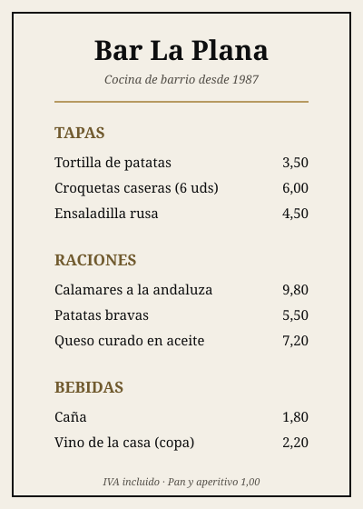
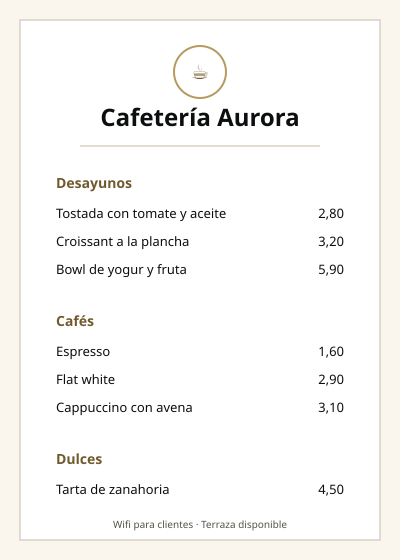

01 / Entra
Una carta existente.
Archivo, imágenes o contenido que necesita orden y una salida digital.

Producto principal / Desarrollo activo
Un flujo para pasar de una carta existente a una versión digital que se puede revisar, publicar y mantener.
01 / Entra
Archivo, imágenes o contenido que necesita orden y una salida digital.
02 / Se trabaja
El contenido extraído no se publica solo: se comprueba y se ajusta.
03 / Sale
La carta publicada conserva una dirección permanente mientras el contenido cambia.
Estado verificable
Este estado describe el producto actual. No convierte las pruebas locales en una promesa de servicio disponible.
Crear y ordenar categorías, productos, descripciones y precios.
Publicar versiones manteniendo la dirección y el código QR del negocio.
Recibir archivos y preparar sus páginas para el proceso de extracción.
Respuesta estructurada del proveedor y revisión humana obligatoria antes de tocar la carta.
Los resultados revisados pasan al contenido editable con la aprobación de una persona.
Propietario, gerente y personal, con invitaciones por correo y permisos aplicados en la base de datos.
La aplicación funciona en servidores propios, no solo en un ordenador local.
Sustituir el disparo actual por una cola persistente que resista caídas y reintentos.
Probar el recorrido completo con un negocio real y criterios de aceptación cerrados.
Demo gratuita
Simulación local · Sin IA en vivo
Elige un archivo de prueba y recorre el mismo camino que seguirá tu carta real: procesar, revisar, editar y publicar. Todo ocurre en tu navegador con resultados de ejemplo precalculados; no se envía nada a ningún servidor.
La demo interactiva se carga con JavaScript. Los archivos de ejemplo son estos:

Bar La Plana Carta breve de bar: tapas, raciones y bebidas.
Cafetería Aurora Desayunos, cafés y dulces con formato cuidado.Alcance de la primera versión
Siguiente hito
El producto está desplegado y funcionando: un negocio puede crear su carta, publicarla con QR permanente e invitar a su equipo con roles.
Durante el piloto el acceso se abre por invitación, con acompañamiento directo. Antes de la apertura general queda cerrar el procesamiento duradero.
Elige un canal de contacto.